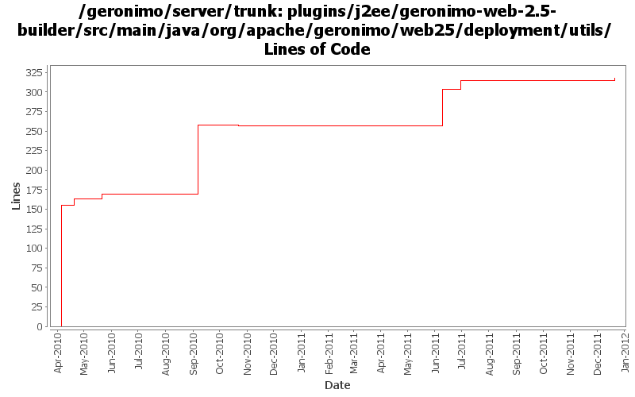

[root]/plugins/j2ee/geronimo-web-2.5-builder/src/main/java/org/apache/geronimo/web25/deployment/utils

| Author | Changes | Lines of Code | Lines per Change |
|---|---|---|---|
| Totals | 10 (100.0%) | 364 (100.0%) | 36.4 |
| xuhaihong | 5 (50.0%) | 174 (47.8%) | 34.8 |
| djencks | 3 (30.0%) | 126 (34.6%) | 42.0 |
| kevan | 1 (10.0%) | 48 (13.2%) | 48.0 |
| rwonly | 1 (10.0%) | 16 (4.4%) | 16.0 |
GERONIMO-6240 make xml attribute and reference builders work and provide GBeanBuilder as a gbean for modules builders to use
4 lines of code changed in 1 file:
GERONIMO-6025 make the url-pattern validation happen in a single place
16 lines of code changed in 1 file:
GERONIMO-6002 allow gbean xml attributes to be overridden in config.xml
48 lines of code changed in 1 file:
Miss some changes in the last commit
1 lines of code changed in 1 file:
GERONIMO-5567 rewrite jetty integration to use a openejb-like info tree and the *Registration interfaces. This gets everything started in the right order and is a lot simpler. Old code still needs to be removed
89 lines of code changed in 1 file:
GERONIMO-5190 use openejb-jee jaxb tree for spec dds
33 lines of code changed in 1 file:
Add merge process for session-config configurations
6 lines of code changed in 1 file:
1. Support http-omission-method configuration in web deployment xml file
2. Move out the http method checking logic, so we could throw Exception as early as possible
12 lines of code changed in 1 file:
GERONIMO-5037 Support Servlet 3.0 annotation and fragment web file
155 lines of code changed in 2 files: